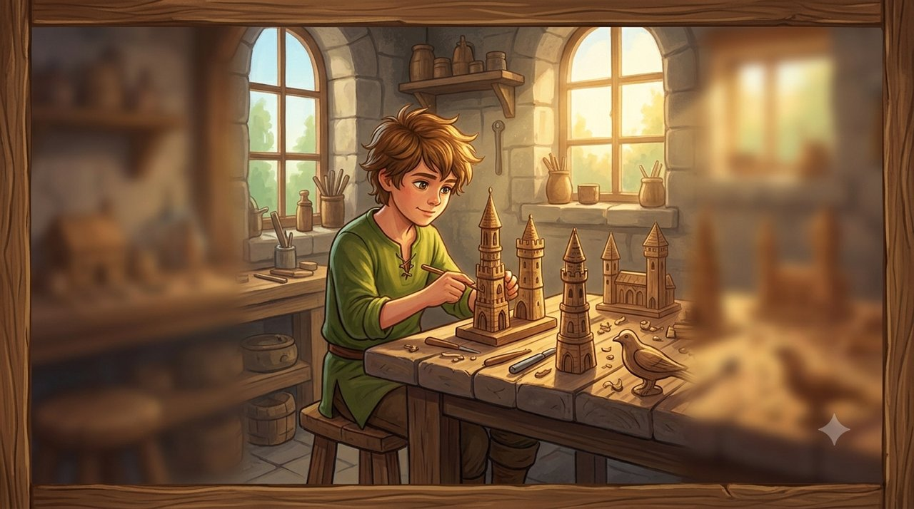
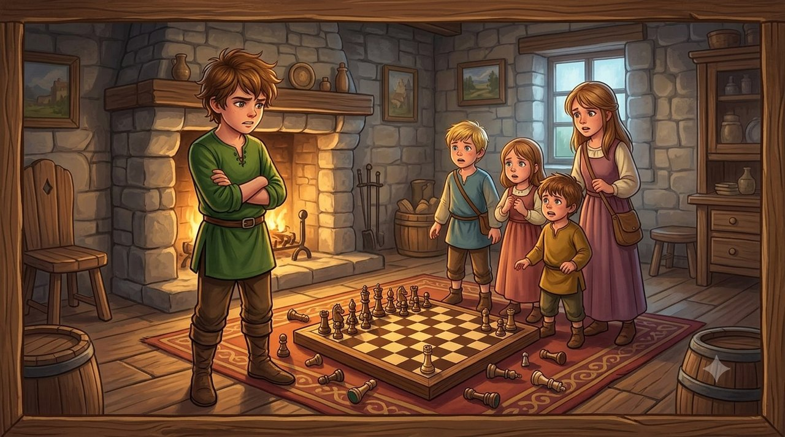
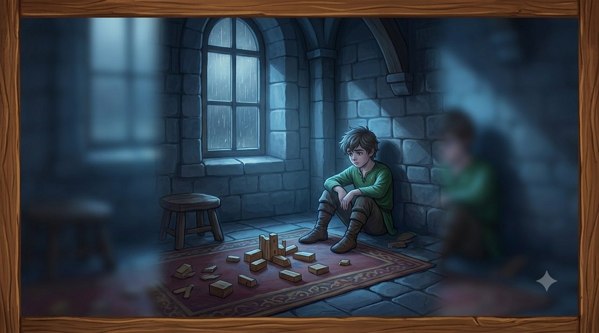
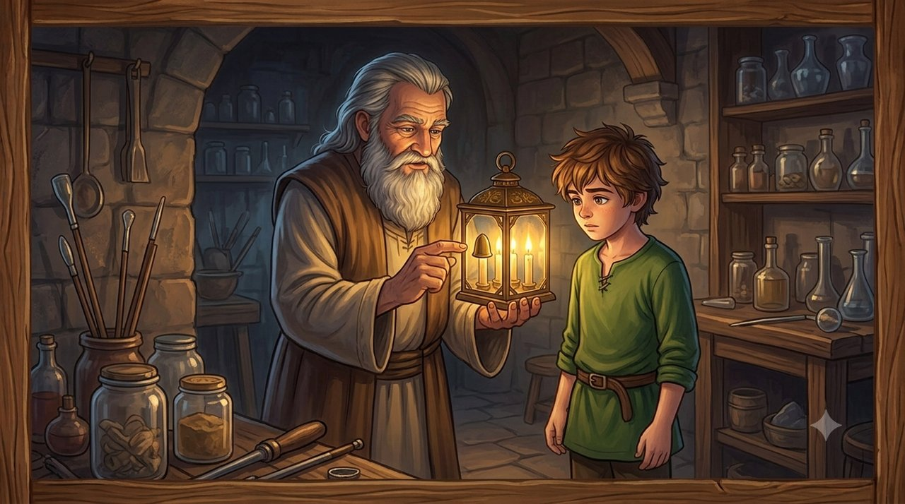
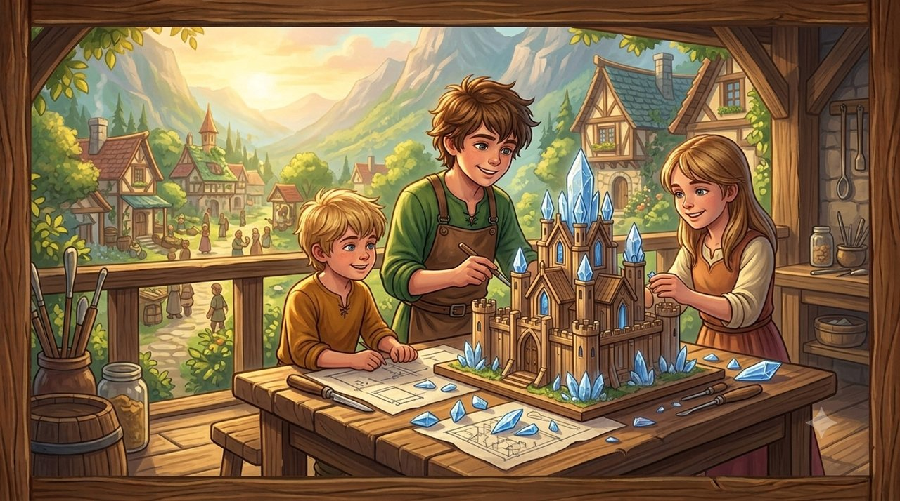

On the slopes of the Galilee hills, in the kingdom of the Ancients, in a warm stone house full of noise, there lived a thoughtful and sensitive boy named Liryon. Liryon had two younger brothers and an older sister. He loved building precise models out of wood and was very proud of his work, but inside the house he developed a constant feeling of crowding and competition: it seemed to him that every bit of space, every compliment and every game turned at once into a battlefield over his place.
The warped mechanism: brothers as rivals stealing his place
Liryon adopted an all-or-nothing way of thinking – "if they get something, I lose something" – and answered every ordinary moment of the day with force:

His little brother asks to join him at the woodwork, and to Liryon it is an invasion and a threat: "He only wants to wreck it and take the good pieces." And so: shouting, snatching the pieces back, and pushing him out of the room.
His parents praise his sister for a drawing she has finished, and all Liryon hears is a comparison: "They love her more, her success comes at my expense." And so: open contempt for the drawing, and sulking behind a closed door.
An argument over whose turn it is in the family board game, and to Liryon it is proof: "If it is not by my rules, then all of you are against me." And so: the board overturned, a boycott declared, and a corner of the room to sit in alone.
The crisis and the collapse of the fortress

On a particularly rainy day, with the whole family at home, his little brother accidentally destroyed a delicate wooden tower that Liryon had spent weeks building. Liryon's fury broke out with full force: he hurled cutting words at all his brothers, accused them all of making his life bitter, and demanded that a partition be built to separate him from the rest of the household.
His brothers and sister, frightened by the force of it and by the insults, fell silent and drew away. When he looked around him, Liryon saw a room in complete silence. Nobody tried to argue with him any more, but the house had suddenly turned cold, dim and distant. The fortress he had built around himself had become a prison of loneliness.
The meeting with the wise man, and the lantern

The next day, in the cellar of the house, Liryon met his grandfather Avihu, a renowned glassblower. His grandfather set an old glass lantern with four wicks down on the workbench.
"Look at this lantern, Liryon," his grandfather said quietly. "Inside it there is one reservoir of oil, feeding four separate flames."
His grandfather covered three of the wicks with metal caps, and the room sank into half-darkness.
"When you thought your brothers' light threatened your own," his grandfather explained, "you covered their flames. But look: your light did not grow stronger when you put theirs out – the whole room simply became darker. Your brothers, and every one of your people, are not rivals over a limited space. You are all joined to the same root. When one of you shines, the whole house is lit; and when one of you is hurt, the darkness reaches all of you."
Understanding, and repair

Liryon lifted the caps off the lantern and watched the four flames merge into a single powerful beam of light. He understood that loving his brothers, and loving his people, did not ask him to disappear – only to understand that the other person is a part of him.
Liryon went up to the shared room, gathered the fallen beams of wood, and called to his brothers and his sister: "Let's build a new tower together. There is room in it for all of our work, and it will be stronger that way."
Respect and love for a brother, and for whoever stands in front of us, begin with understanding that another person's light never weakens our own – it enlarges the light all of us share.